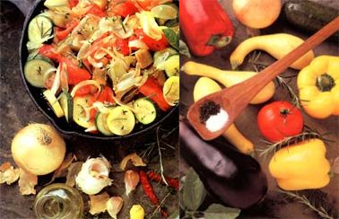
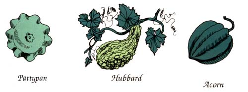

Issue # 119-SEPTEMBER/OCTOBER 1989
KITCHEN GARDEN
WHEN ROGER WILLIAMS, THE founder of Rhode Island, first be came acquainted with squash, he called them "vine apples of many colors. That's a more poetic description of then varied vegetables than our shortened version of the Native American word askutasquash" meaning "eaten raw." But as Shakespeare might have noted, a squash by any other name would taste as delicious. It would be as nutritious, too, because vine apples, in all their myriad forms, are good sources of vitamin A and provide important minerals like potassium, phosphorus and calcium, yet they contain very few calories and almost no fat.
There are the two main categories of squash: summer and winter. Summer squash (Cucurbita pepo) are believed to have originated in North America. They require full sun and are harvested while still young and tender (some in less than 50 days; most in 60 to 70 days), and include such well-known varieties as zucchini (both green and yellow types); crookneck and straightneck squash (both generally yellow); and scallop, or pattypan, squash (usually white, but sometimes yellow). These warm-weather vegetables will keep for only a week or so in the refrigerator, so you'll probably want to can or freeze a large part of your crop.
Don't forget, too, that the blossoms of many kinds of squash (particularly the male flowers), picked just before they open, are delicious in soups, with meat, in stews or scrambled with eggs; they can also be sauteed, dipped in batter and fried, or stuffed.
Many types of winter squash originally came from South America, though this is a broad category that includes Cucurbita maxima, C. mixta; C. moschata and C. pepo. With the exception of the butternut, they are hardshelled, and while the fruits can be steamed when young, most are meant to be harvested when fully mature at around 75 to 120 days. These winter-keepers, which are even more nutritious than summer squash, will stay fresh for around five months when stored in a cool, dry area, and most people think they retain their flavor better when stored than when cooked (cubed or pureed) and frozen.
Winter squash are perfect for baking. Just cut them in half, remove the seeds (which can be dried and roasted) along with the stringy pulp, and sprinkle the flesh with brown sugar and spices such as cinnamon and nutmeg. Place the baking dish in a pan of water, and bake the squash at 350°F until tender, which can take from 10 to 30 minutes.
Though some bush and semibush types are now available, the sprawling vines of most winter squash take up more garden space than do summer varieties. Their fruits come in an assortment of sizes, shapes and colors, but fall into six main groups-butternut, acorn, buttercup, delicious, Hubbard and banana-with a mind-boggling array of cultivars to choose from in each category.
Butternuts produce eight- to 12-inch-long fruits with tan skins and fine-tasting orange flesh. The vines usually need plenty of room to spread, but Burpee's Butterbush, a compact butternut variety, requires only three to four feet of garden space and produces one-and-a-half-pound fruits in approximately 75 days.
Acorns, or pepper squash, mature in 80 to 90 days and have dark green to yellow fruits that weigh one to two pounds and are round and usually furrowed. Though acorns don't keep as well as other winter squash, they're versatile and productive. One bush type, Table King (80 days, yielding large fruits with smooth, dark green skins), is a popular acorn variety, but give Jersey Golden a try. It takes only 50 days to mature, and its butter yellow flesh tastes a bit like sweet corn.
Buttercups, or turbans, which keep well, are considered by many gardeners to be among the most sumptuous of winter squash. For a tasty bush variety, try Sweet Mama (85 days). Its two- to three-pound, mild-flavored fruits will store for up to four months, and the plant is resistant to fusarium wilt and vine borers.
Delicious varieties include Golden Delicious (100 days), which, along with its top vitamin content, tastes so tempting that it's often used in baby foods. However, Green Delicious (102 days) produces medium-sized, dark green, heart-shaped fruits that are better for storing, and it's one winter squash that's excellent for freezing.
Hubbards, which can weigh as much as 30 pounds, are the best type for winter storing, though it would take a huge appetite or a large family to polish off one of these giant-sized fruits in a single meal. Most gardeners prefer the smaller varieties, such as Golden Hubbard (90 days), whose moderately warted, orange-red, eight-pound shells contain flesh that's deep orange.
Bananas are even bigger, growing as large as 75 pounds. Though usually pink-skinned, there's an unusually colored one called Green Banana that reaches only 25 to 30 pounds.
Though sun lovers, squash are made up mostly of water, so they don't do well in hot, dry regions with limited moisture. This is particularly true of winter squash. And-like their relatives, cucumbers and melons-both summer and winter types are sensitive to cold weather, even though most winter squash can tolerate light shade and cooler night time temperatures better than summer varieties can. Squash are also heavy feeders and need a light, well-drained but moisture-retentive soil heavily enriched with compost and well-rotted manure. The pH range should be 6 to 7.
Plant seeds when the earth has warmed (the minimum soil temperature for germination is 60°F) and the air temperatures have settled, usually about one week after the last spring frost date. In areas with a short growing season, sow the seeds indoors in peat pots one month before it's time to set the plants outdoors. Put two seeds to a pot, and discard the weaker seedling. Water well just before setting them out, and try not to disturb the roots when transplanting.
Keep in mind that summer squash produce more heavily than winter squash. Germination rates are 75%, and unused seed can be stored for four to five years.
When planting in hills, space summer squash three feet apart; vining winter varie ties need to be six to eight feet apart. Sow six or seven seeds per hill in a 12-inch-diameter circle at a depth of one-half to one inch deep, and thin to the three strongest seedlings when the plants are three inches tall.
Pick the blossomsof squash, too; they're delicious to eat.
Conventional rows can also be used by spacing vining varieties three to four feet apart in rows set eight to 12 feet apart; bush types should be placed two to three feet apart in rows spaced four to six feet apart. Some gardeners intersperse winter squash with corn, allowing the sprawling vines to utilize the corn stalks as climbing poles. Those with limited garden space often tie three poles together and spread them to form a tripod, planting a squash seed at the base of each pole. You can also train vining varieties along wire fences or on firmly supported growing nets.
Whatever the method of planting, give seedlings plenty of water, and keep the soil consistently moist throughout the growing period. However, to prevent the spread of such diseases as mildew, try to avoid spraying the foliage directly, and don't handle the plants while they're wet. Dig up any weeds around the plants until the vines begin to lengthen, then put down a thick mulch of hay, straw or leaves.
Male squash blossoms, which have a single fat stamen in their centers, appear first, followed about a week later by female flowers, which have a large swelling (the ovary) just behind the blossom, as well as a four-part pistil in the flower's center. Since squash aren't self-pollinating (they depend on bees or other insects to do this job), female blooms that drop off without producing fruit probably haven't been fertilized. (This is usually due to adverse weather.) To prevent this, use a soft brush to transfer pollen from the male stamen to the female pistil.
And while it's not true that squash will cross-pollinate with pumpkins, it's best not to try saving seeds of any C. Maxima (which includes Hubbard, banana and turban types) that are planted near other squash varieties, because of the high possibility of cross-pollination.
By midsummer, when winter squash will have set all the fruit they will have time to mature, remove all the flowers to conserve plant energy for ripening the harvest. It's also a good idea to pinch off the growing points of trailing vines when they reach about 60 inches, in order to encourage fruitbearing side shoots.
Squash are usually trouble-free, but a number of pests will occasionally attack the plants. The two most common are squash vine borers and squash bugs. The inch-long, white, caterpillarlike vine borers tunnel into the stem and can go undetected until a vine wilts. However, if you spot an entry hole surrounded by sawdusty droppings at the base of the plant, cut a slit in the afflicted stem, and remove and destroy the larvae inside. Afterward, hill up dirt around the plant's stem so it can reroot and continue growing. Invasions of vine borers can also be avoided by periodically dusting the plants with lime, wood ashes or Bacillus thuringiensis.
Harvest everyripe squash so the plants will continue to produce.
Reddish brown, three-quarter-inch-long squash bugs (also called stinkbugs because of the smell they give out when crushed) can be controlled by handpicking and by destroying their red-brown egg clusters. For epidemic outbreaks, use pyrethrum or rotenone. The adult insects can be banished with diatomaceous earth, or boards can be set out at night; the bugs get trapped underneath and can be destroyed the next morning. Planting radishes, nasturtiums or French or African marigolds may lure-or chase-them away.
Though cucumber beetles aren't as common a problem, they carry bacterial wilt, a disease that can cause the whole plant to wilt and die. (Any infected plant should be removed and destroyed immediately.) These one-quarter-inch-long black-headed beetles with green or yellow wings can be lured away with radishes, which they adore. You can also lay thin cheesecloth, or one of the modern mesh row covers, over young squash vines until they are well established, or plagued gardeners can plant summer squash later in the season. Mulching the vines heavily and dusting them with pyrethrum or rotenone can be effective too.
Mildew occurs in damp weather and is spread by aphids, but these little pests can usually be destroyed with hard hose sprays, garlic sprays, diatomaceous earth or wood ashes. Other deterrents are to catch them in sticky traps or to introduce aphid-eating ladybugs into your garden.
Aphids and cucumber beetles spread yet another squash-destroying disease: mosaic. It results in rough, mottled leaves, stunted plants and whitish fruit. Again, destroy any infected plant, and battle the pests with one or more of the above strategies.
Anthracnose is a soilborne fungus causing hollow, water-soaked spots on the leaves of summer squash-spots that eventually grow large and brown. To prevent the disease, practice crop rotation, avoiding areas where squash or other cucurbits, such as cucumbers, pumpkins and melons, have been planted.
Healthy summer squash will continue to set buds for quite a while as long as you pick each fruit before it matures; that is, just after its blossom drops off. However, if you miss even one squash, the entire plant will soon stop producing, so pick the vines regularly, harvesting zucchini and crookneck varieties at a tender six to eight inches long and the rounder types at four to eight inches in diameter. Your fingernail should easily penetrate the squash's skin; if it doesn't, you've left it on the vine too long.
Winter squash, on the other hand, if not allowed to mature, will taste bland and watery and won't store well. Pick them when the plants die back or just before the first frost when the shells are hard. (Though light frosts can enhance the fruits' flavor by changing some of their starch to sugar, exposure to frost injures their keeping quality.) Harvest during a dry spell, cutting the fruit from the vine with a sharp, clean knife, leaving three to four inches of stem. (If you pull the stem off, the whole fruit will most likely rot from that end. Should a stem break off accidentally, then it's best to use that squash as soon as possible.) Be sure to wipe your knife between cuttings to avoid spreading disease to still-ripening fruits. Also, handle your harvest gently, as squash bruise easily and bruised fruit won't keep-and, finally, don't wash the fruit you plan to store.
If possible, cure your winter-keepers in the sun until the stems shrivel and turn a gray color, then store them in a cool (45° to 50°F) and dry (60 to 70% humidity) place, where they should keep for up to five months. (Acorn squash need a slightly moister and cooler storage area.)
To can summer squash, just slice the cleaned, tender fruits into one-half-inch-thick pieces, pack them into canning jars, cover the contents with boiling water, seal the jars, and process them in a pressure tanner at 10 pounds of pressure-25 minutes for pints and 30 minutes for quarts.
For freezing, wash the squash and slice them into one-half-inch pieces, blanch these in boiling water for three minutes, then cool, drain, pack and freeze them. Summer squash can also be dried, pickled or turned into a delicious relish.
A leaf canopywill conserve moisture and repress weeds.
American Ratatouille
Because of the current preference for crisper, more nutritious vegetables, we've cut down the cooking time on this variation of an old favorite from southern France.
2 medium-sized onions,chopped
2 cloves garlic,minced
3 tablespoons olive oil,
1 tablespoon margarine
1 medium-sized eggplant, peeled and cut in small chunks
2 sweet peppers, deseeded and sliced
1 hot pepper, deseeded and minced
Salt and pepper to taste
Fresh thyme, rosemary and basil to taste 2 zucchini, sliced
2 crookneck or straightneck squash, sliced
46 tomatoes, quartered
Sauté onions and garlic in oil and margarine in a large skillet. Add eggplant, peppers, salt and pepper, and fresh herbs. Cook, while stirring, until eggplant begins to turn soft. Stir in zucchini and squash, and sauté for about 5 minutes. Add tomatoes, lower heat, cover, and simmer for 15 minutes. Use as a side dish, or as a main dish with rice or boiled potatoes. Serves 6-8.
1-1/4cups winter squash, peeled, cooked and mashed
2 tablespoons vegetable oil
3/4 cup low-fat milk
2 eggs, slightly beaten
1 teaspoon cinnamon
1/2 teaspoon vanilla
1-1/4 teaspoon ginger
2 teaspoons nutmeg
1/8 inch graham cracker piecrust
Whipped topping
Mix the squash, oil, milk, eggs and spices. Pour into piecrust, and bake at 450°F for 25 minutes or until done. Garnish with whipped topping. Serves 6-8.
MOTHER'S GARDENER, SUSAN SIDES, offers some good advice: Squash are set out just as many early spring crops such as lettuce, beets, mustard, broccoli, cauliflower and cabbage are finishing up. To maximize the efficient use of garden space, use this fact to your advantage. Intentionally leave spaces in rows or beds by harvesting a lettuce here and a handful of beets there while setting in your squash seeds or seedlings. Then simply continue to harvest outward as the squash expand. Not only will you be saving space but the leafy canopy of maturing spring crops will help conserve soil moisture and repress weeds.
|
 AL CLAYTON FOOD STYLING BY MARY ANN CLAYTON |
 |
|